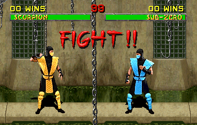

Lab 11



Challenges
Once again, there were no challenges for this one. Pretty straight forward insturctions.
Problems
As previuosly stated, I did not face any problems doing this lab. Even Mr. Wes said that lab would be a piece of cake.
Results
I got the inline block displaying perfectly on the right as instructed. As well, even the got the link back to the homepage on a sticky position when you scroll down the page. Another success.